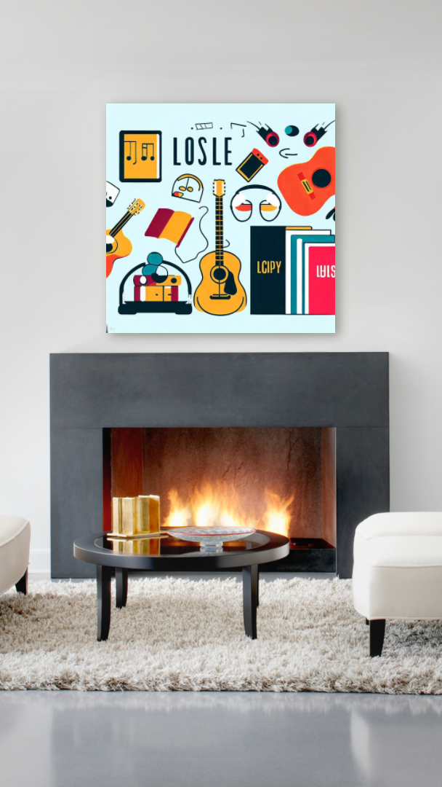

My interests
Hobbies and Activities
- Listening to music and playing instruments, especially the violin
- Computers, reading, playing video games, and travelling.
Music
- Progressive rock, with my favourite band being The Dear Hunter.
- Other genres and artists include Jacob Collier, Coldplay, Pearl Jam, Steve Wonder, and classical music.
TV Shows, Films, and Books
- Favourite TV show: Sherlock from BBC.
- Favourite film: ‘Into the wild’.
- Current favourite book: ‘The Wise man’s fear’ by Patrick Rothfuss.
Foods and Cuisines
- Brazilian cuisine, especially traditional dishes from Minas Gerais such as ‘Pao de queijo’ and ‘feijoada’.
Travel Destinations
- England, with a love for every little town and city visited.
- Beaches in south Brazil, specifically Florianopolis.
- Portugal for its architecture and natural beauty.
- Planning on visiting Italy to experience some of the majestic historical places.
Subjects and Topics
- Games, TV shows, films, books, and music.
Games and Puzzles
- The Legenf of Zelda games.
Social Media Platforms and Websites
